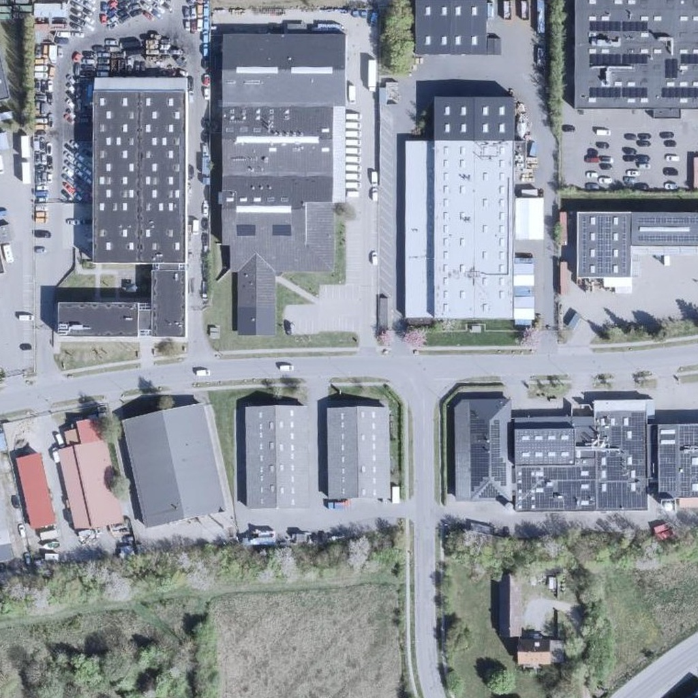
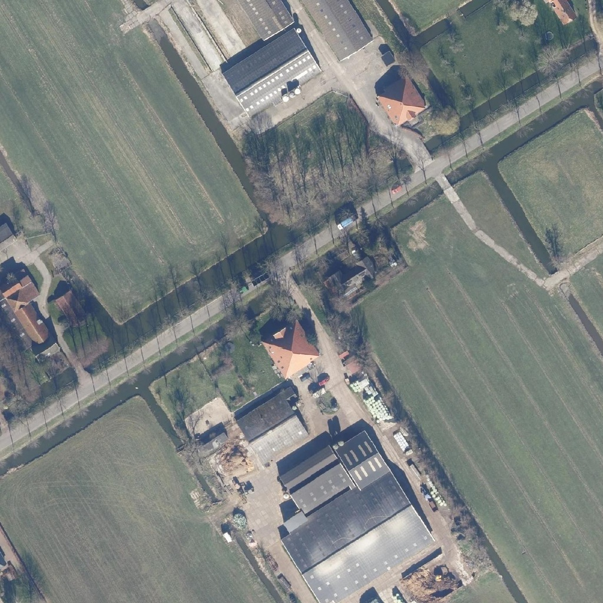
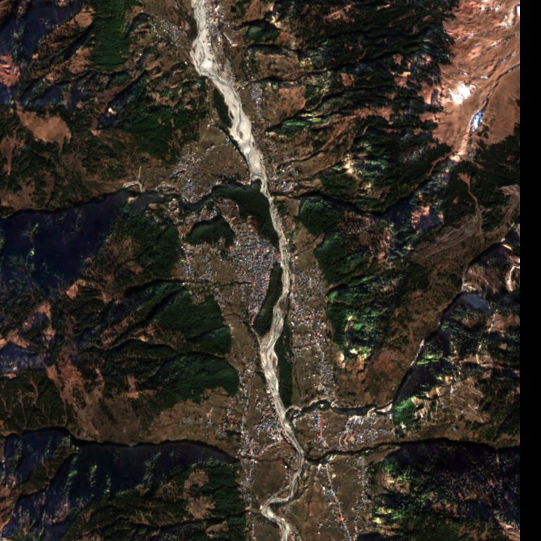

01 · URBAN
Copenhagen
Demonstrates: building-heavy urban reconstruction and mixed building/vegetation routing.
Monocular Surface Reconstruction product: predicted height-above-ground nDSM.
The untouched 2D satellite/aerial images supplied to the three built-in demonstrations. Monocular Surface Reconstruction converts each source into an analysable height product and interactive textured 3D surface.

Demonstrates: building-heavy urban reconstruction and mixed building/vegetation routing.
Monocular Surface Reconstruction product: predicted height-above-ground nDSM.

Demonstrates: held-out sparse-scene reconstruction with an independent height reference.
Honest test result: RMSE 1.48 m · MAE 0.71 m · R² 0.752.

Demonstrates: georeferenced hilly terrain at 10 m GSD with approximately 1,543 m relief.
Monocular Surface Reconstruction product: absolute DSM anchored to a Copernicus GLO-30 terrain datum.